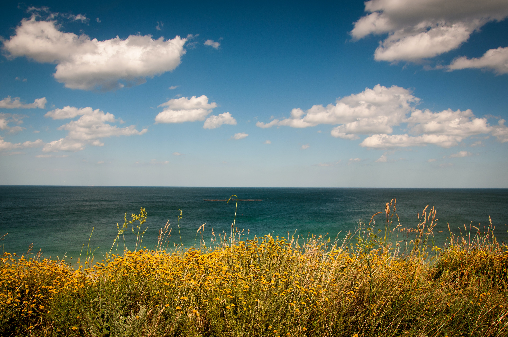

01
What level of hiker are you?
Determining what level of hiker you are can be an important tool when planning future hikes. This hiking level guid will help you plan hike according to different hike ratings set by various websites like All Trails and Modern Hiker. What type of hiker are you - novice, moderate, advanced moderate, expert or expert backpacker?


Picking the right Hiking Gear!
Determining what level of hiker you are can be an important tool when planning future hikes. This hiking level guid will help you plan hike according to different hike ratings set by various websites like All Trails and Modern Hiker. What type of hiker are you - novice, moderate, advanced moderate, expert or expert backpacker?
02
03
Understand Your Map & Timing
Determining what level of hiker you are can be an important tool when planning future hikes. This hiking level guid will help you plan hike according to different hike ratings set by various websites like All Trails and Modern Hiker. What type of hiker are you - novice, moderate, advanced moderate, expert or expert backpacker?
